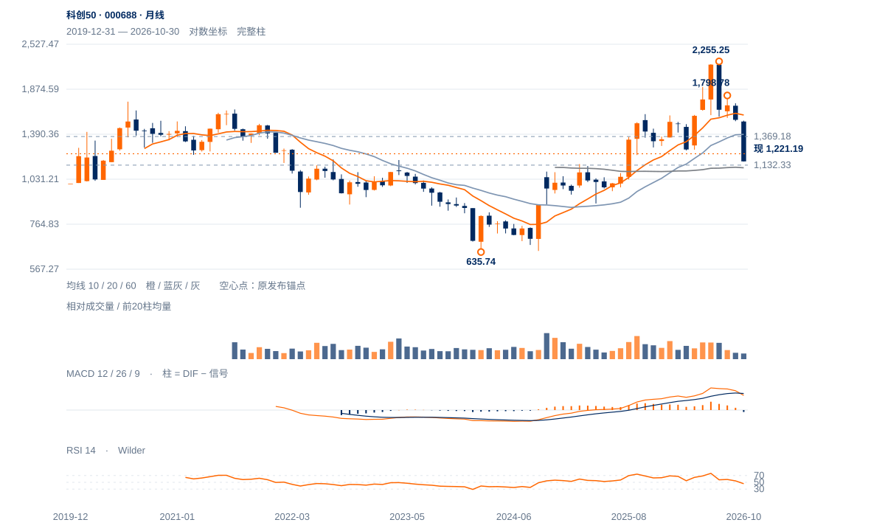

近期从修复领先下调为区间下沿测试，2—6周取决于1132防守与1274回收能否重新建立。
科创50 · 2026-11-23完整收盘
1230再次失守是否否定18—19日领先？
1,227.89-0.26%
修复后失去保持
分期限展望
未来2—6周先按1132—1274区间重建看待。1230恢复且1274日收站稳，才恢复此前领先判断；1132大谷失守则区间解释失效。
未来1—3个月保留与已破大谷指数的区别：1132尚守，仍有筑底空间，但1329中峰过滤未通过。只有同级较高谷与1329保持同时出现，才把区间修复提高为中期升段。

长期背景
2024—2026升波61.8%回撤1254与1249—1274旧低区域重合；10月月收本已在其下，11月的月线回收仍未确认。完整10月20月均衡1,389.11；本月价格变化尚未成为已完成月线确认。 当前日收盘1,227.89与已完成月线背景分开判断；11月仍未结束，不提前计为完整月级反转。
中期结构与新证据
完整周线已更新至11月20日：2026-09-11低1,516.20（2026-09-24确认）；2026-09-22高1,707.67（2026-10-09确认）；2026-11-03低1,132.33（2026-11-20确认）。最新一周与上次11月13日背景分别保存；23日仅为本周进行中观察。18—19日收回1230并上试1276.78，20日退1231.09，23日低1177.56、收1227.89，再度低收1230。前次相对领先没有转成1274以上收盘保持，成为新的修复失败；1132.33较大低谷仍未破，不能与已破大谷指数完全等同。
确认与失效
先回1230再日收站稳1274；原1329两日仍未满足。
1132.33原大谷失效单列；1230回收失败不能以1132尚守掩盖。
主要反方
23日自1178回收仍显承接；若1230迅速恢复并越1274，失败判断可降级。
波动与量能
RSI14 41.38；ATR14 59.61；相对量1.05倍